Storyboard · 1920×1080 · ca. 84 s · stilstaande schetsen (nog zonder beweging)
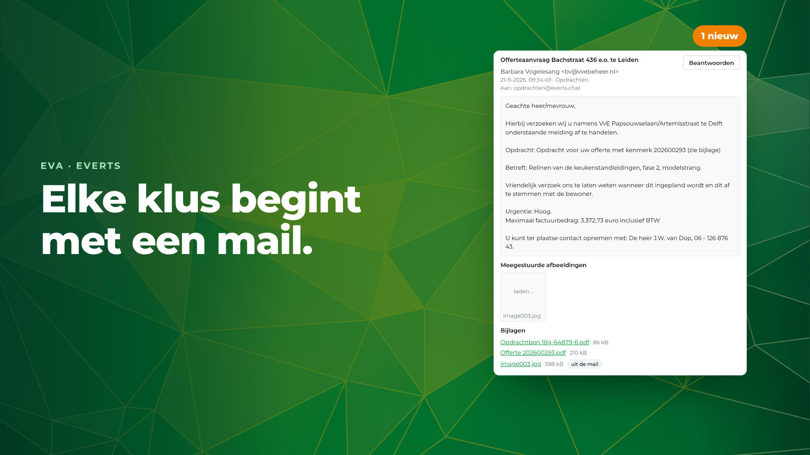
"Elke klus begint met een mail."
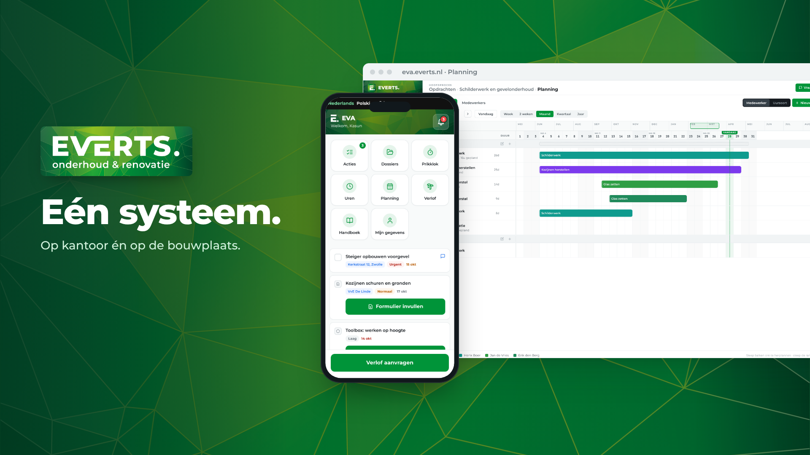
"Met EVA doe je de rest in één systeem — op kantoor, én op de bouwplaats."
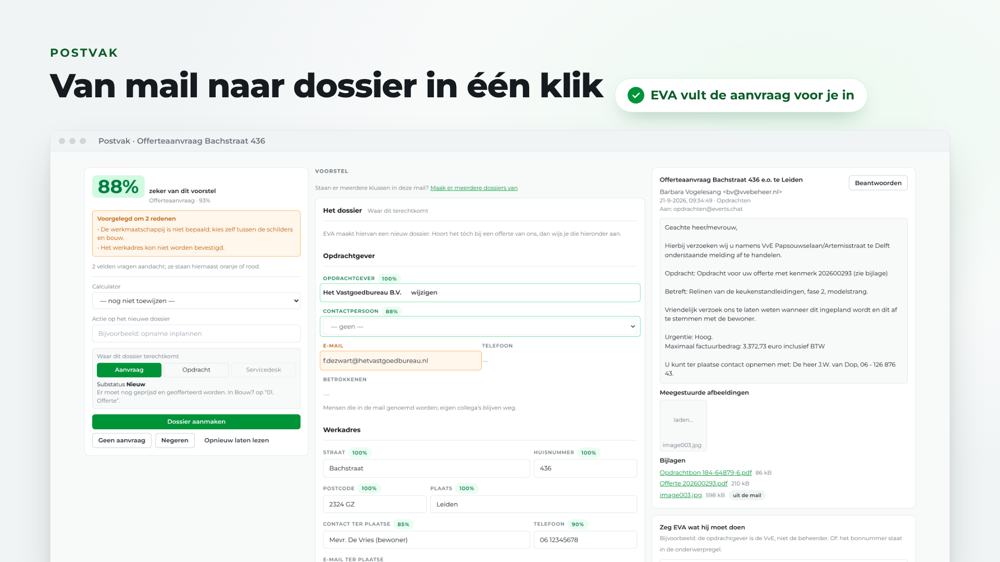
"In het postvak leest EVA de aanvraag mee. Opdrachtgever, werkadres en contactpersoon staan al klaar. Eén klik — en het dossier staat."
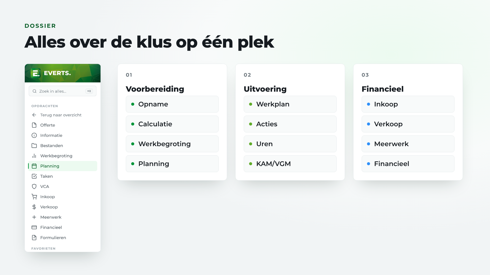
"Alles over de klus staat in één dossier: opname, calculatie en planning, werkplan, uren en inkoop."
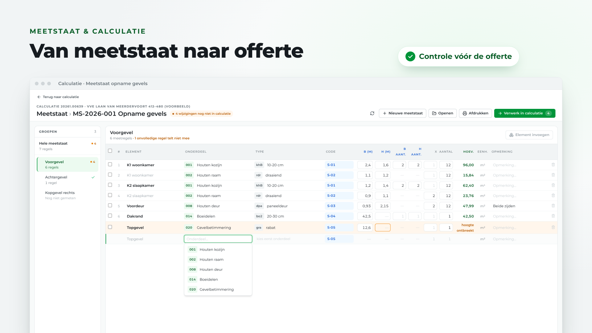
"De opname wordt een meetstaat, de meetstaat een calculatie. En EVA controleert alles, vóórdat de offerte de deur uitgaat."
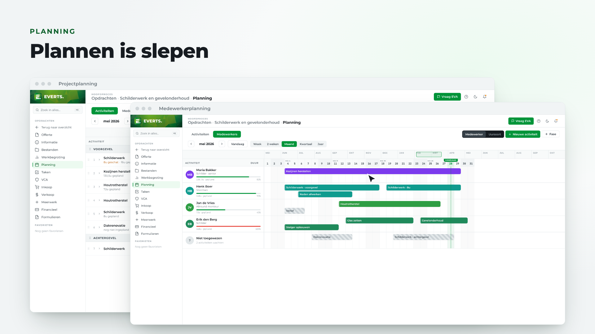
"Gegund? Sleep het werk op het planbord, en verdeel het over je mensen."
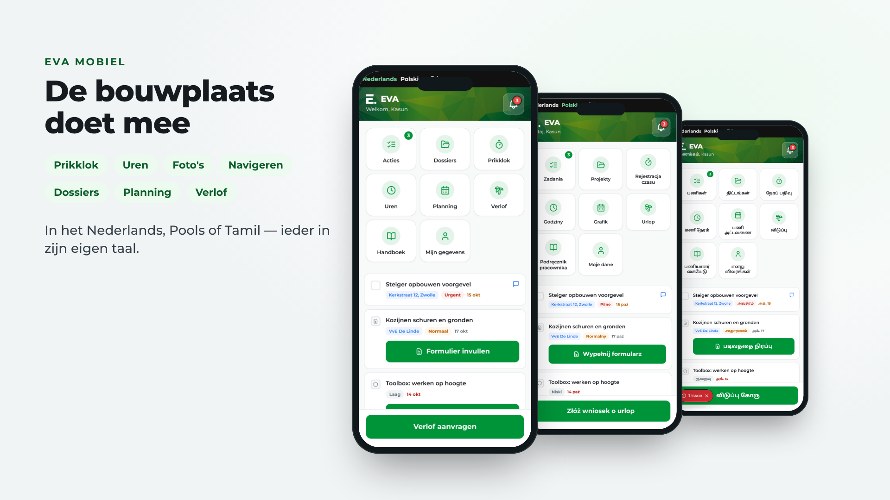
"De vakman ziet het meteen op zijn telefoon. Inklokken, uren schrijven, foto's maken en navigeren naar het werk. In het Nederlands, Pools of Tamil."
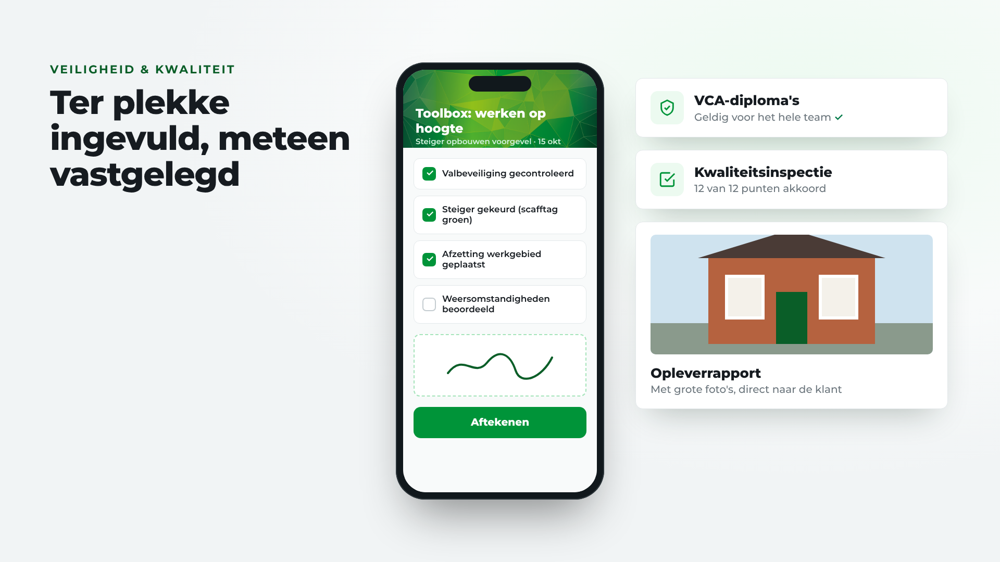
"Toolboxmeetings, kwaliteitsinspecties en het opleverrapport: ter plekke ingevuld, met foto's, en meteen vastgelegd."
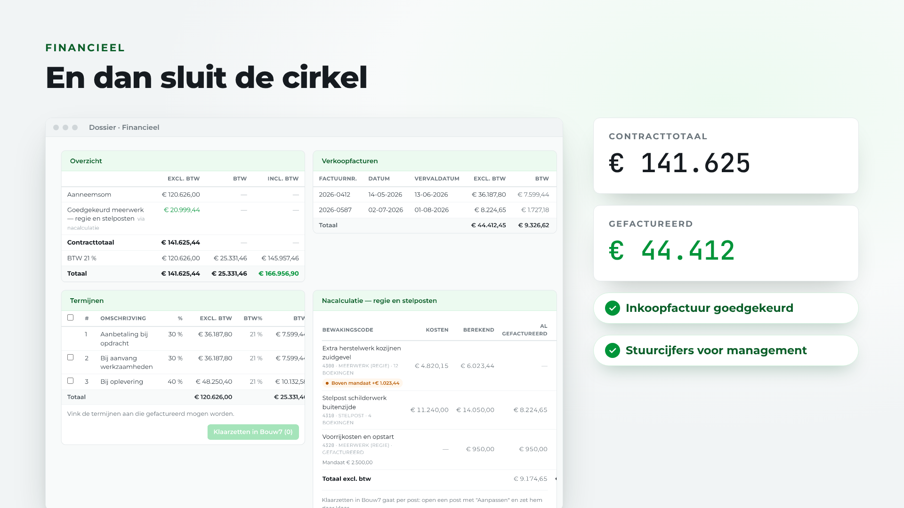
"Daarna sluit de cirkel. Termijnen, meerwerk en facturen. Inkoopfacturen goedkeuren. En stuurcijfers voor het management."
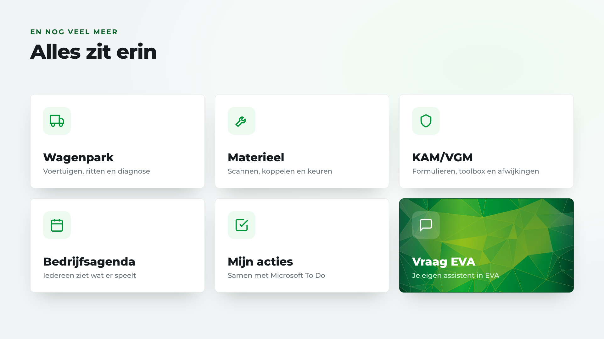
"En ook het wagenpark, het materieel, je acties en de bedrijfsagenda. Heb je een vraag? Vraag het EVA."
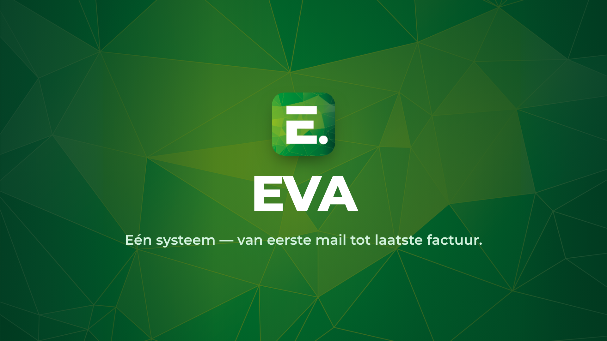
"EVA. Eén systeem — van eerste mail tot laatste factuur."